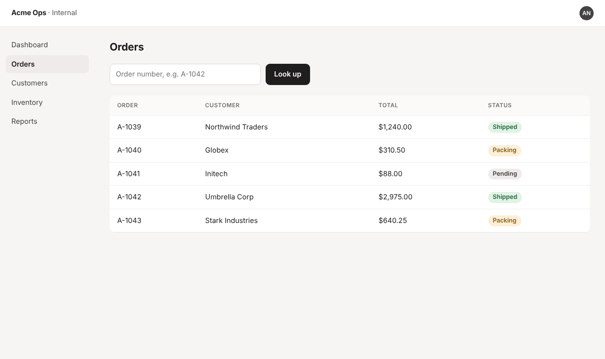
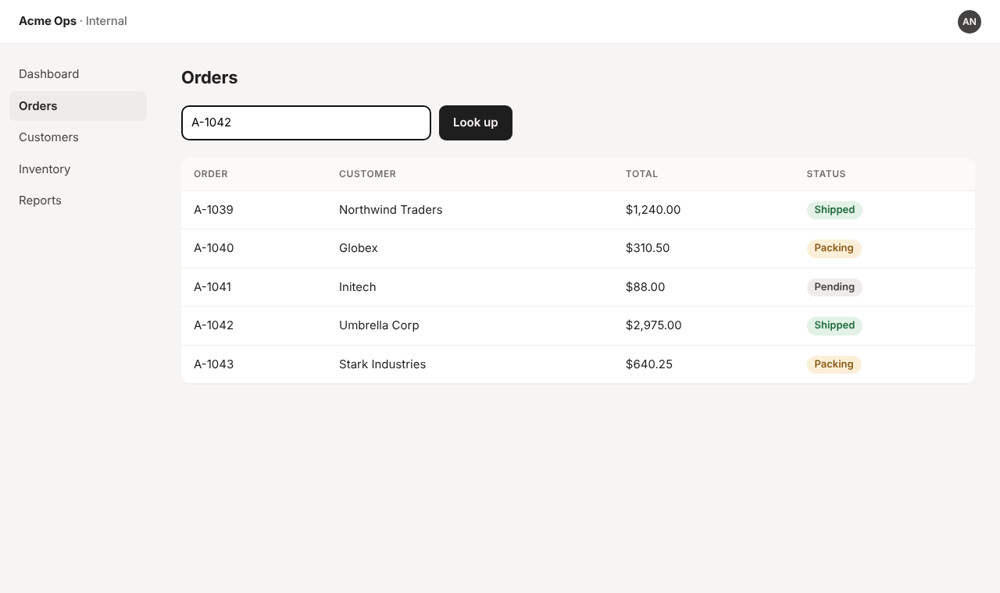
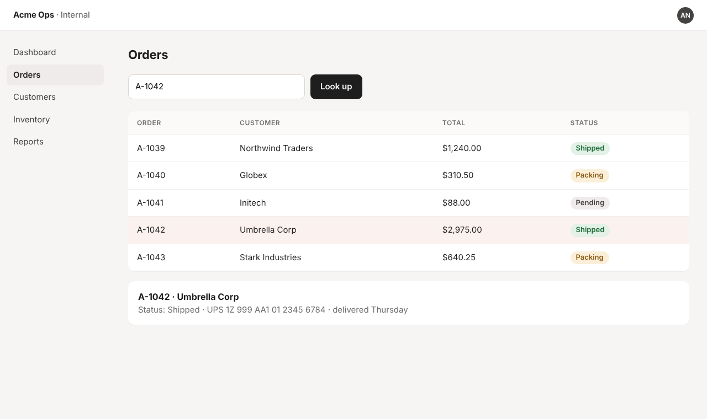

tailbrowser
Let AI agents drive your real Chrome, over your tailnet.
Your agent runs in the cloud.
Your signed-in browser is at home.
>_
AI agent
Claude Code, Cursor, a CI job
Your Chrome
Logins, cookies, extensions
public tunnel? port forwarding?
your tailnet · WireGuard
tailbrowser connects them over your tailnet. No public tunnel. No open ports.
How it works
your tailnet
Chrome + extension
Shares the tabs you pick
Mac mini at home
relay :8787
Bridges Playwright to the tabs
any tailnet machine
Agents
CLI, MCP, npx
anywhere on the tailnet
The extension attaches to the tabs you share.
The relay bridges Playwright to those tabs.
Agents run Playwright snippets against your real browser.
One command. Your real, signed-in browser.
“tailbrowser” started debugging this browserCancel



Real Playwright, real tabs, your existing logins. The agent read back “Shipped”.
You choose what agents can see.
Tabs I pick
Only the tabs you share.
Allowlist
Tabs that match your URL patterns, as you browse.
Entire browser
Every tab, plus opening and closing tabs.
Private by design.
Tailnet only. The relay binds to your Tailscale IP.
Optional token for shared tailnets.
Always visible. Chrome's debugging banner on every shared tab.
One click revokes everything.
tailbrowser
$ npx tailbrowser relay
Load the extension. Point your agent at it.
github.com/AshikNesin/tailbrowser